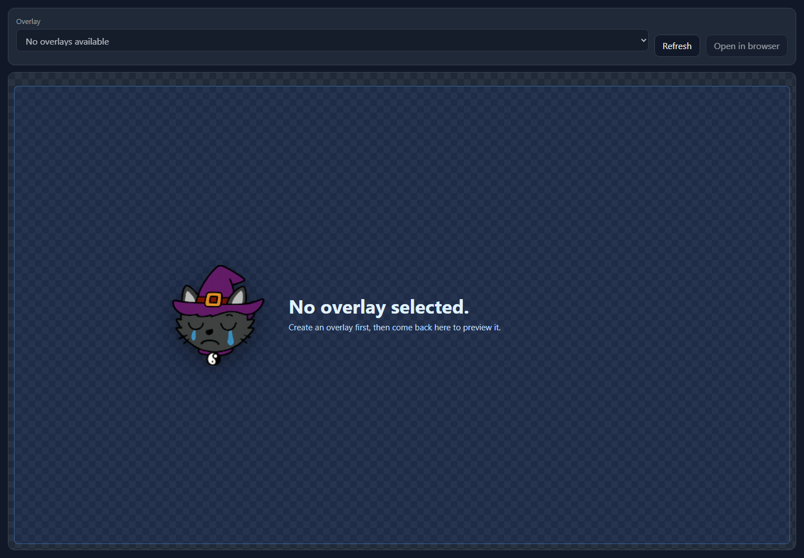

Overlays
Overlay Setup
Overlays define the full-scene browser layer, the boxes inside it, and the sources each box can show when triggers arrive.
How Overlays Work
Create one overlay for the stream scene, then add that overlay to OBS as a browser source that covers the whole scene. The overlay itself acts like a transparent stage on top of your stream.
Inside that overlay, create multiple boxes. Each box reserves a position on the stream and can react to its own triggers. This is the pattern you want for different memes, audio and video cues, chat callouts, alerts, TTS responses, and other stream effects.
Instead of adding a separate browser source for every meme or cue, keep one full-scene NekoBot overlay in OBS and let NekoBot decide which box appears when a trigger fires.
Page Controls

Overlay Setup is the main landing page for stream layout work. Use it when you need to create an overlay, arrange boxes, connect sources, bind triggers, and copy the OBS URL.
Select saved overlay...Loads an existing overlay into the editor. The selected overlay owns the stage, boxes, sources, trigger bindings, default status, and OBS URL.New overlayCreates a blank overlay definition. Use this for a new OBS scene layout, such as gameplay, chatting, or BRB.Open OverlayOpens the viewer page that OBS renders. This is useful for previewing the actual transparent overlay outside the setup editor.RefreshReloads the saved overlay list when another browser tab or setup action changed overlays.NameThe saved overlay name. Name it after the OBS scene or layout it belongs to.Add boxAdds a positioned region inside the overlay. After creating a box, select it to open the Box inspector.SaveWrites the overlay definition to disk. Save after moving boxes, changing sources, editing triggers, or renaming the overlay.Copy OBS URLCopies the browser-source URL for the selected overlay. Paste this into OBS as a full-scene Browser Source.Set DefaultMakes this overlay the default viewer target when no overlay id is provided.Delete overlayRemoves the saved overlay after confirmation. This deletes the layout and all boxes inside it.Stage And Boxes

The setup stage is a 16:9 editor for placing boxes relative to the stream scene. Drag and resize boxes on the stage, then use the inspector to fine tune the selected item.
Stream previewThe setup background image. It helps you position boxes against a scene mockup; it is not rendered to viewers.Box on stageDrag to move it, resize to fit the visual effect, then select it to edit box options. A box can hold one source or several possible sources.Box inspectorEdits general settings, layout, appearance, trigger bindings, and source list for the selected box.Stream Preview InspectorClick empty space on the preview to edit overlay-level preview settings instead of a box.Sources
Sources are the actual content shown by a box. A source can be reused, edited, and selected by triggers.
Defined SourceReuse an existing source from the source library.Text SourceShow static text or trigger-token text such as {{message.text}}.Media SourceShow or play uploaded files and URLs such as images, GIFs, videos, and audio.URL SourceEmbed a webpage or browser-rendered URL in the box.TTS SourceGenerate speech from text using an enabled TTS model and selected voice.Create and edit sources through the Add Source Dialog. For media sources, use trigger mode settings to decide whether the source hides after a timer or stays visible until toggled.
Triggers
Triggers decide when a box runs. After connecting Streamer.bot, NekoBot can bind chat messages, commands, actions, or raw subscribed events to a box.
- Chat message triggers are good for chat overlays and token-driven text.
- Command triggers are good for intentional effects like
!hype,!tts, or!meme. - Action triggers let Streamer.bot actions drive a NekoBot box.
- Raw triggers can be narrowed with hit rules when only specific trigger data should run the box.
New trigger bindings are created through the Add Trigger control. Use command triggers for viewer commands, action triggers for Streamer.bot action flows, and raw triggers when you need to match a subscribed event directly.
Source Rotation
For boxes with more than one source, source trigger mode decides which source appears when the box is triggered.
Sequencemoves through the source list and wraps around at the end.Randompicks one source while avoiding the same source twice in a row when possible.Customcreates IF/ELSE-style rules against trigger values and maps each match to a source.
This is the right setup for rotating memes, short video stingers, sound cues, and different responses from the same command.
OBS Viewer

The Open Overlay page previews the real overlay viewer and exposes the URL OBS should use. OBS should load the overlay URL as one browser source, then stretch that browser source across the whole scene.
- Save the overlay in Overlay Setup.
- Click
Copy OBS URL, or use Open Overlay and copy the browser URL. - Add a Browser Source in OBS.
- Set the browser source to the full scene size, usually
1920x1080or your canvas size. - Keep this one NekoBot source above the scene content that the effects should cover.
Troubleshooting
- If
Copy OBS URLis disabled, save the overlay first. - If nothing appears in OBS, confirm the browser source uses the overlay URL and covers the whole scene.
- If a trigger does nothing, confirm Streamer.bot is connected and the needed event group is subscribed.
- If the wrong source appears, check the box source trigger mode and any custom rules.
- If media does not render, test the source in the source dialog preview and confirm the file or URL is reachable.
- If layout feels off in OBS, match the OBS browser-source size to the stream canvas size.